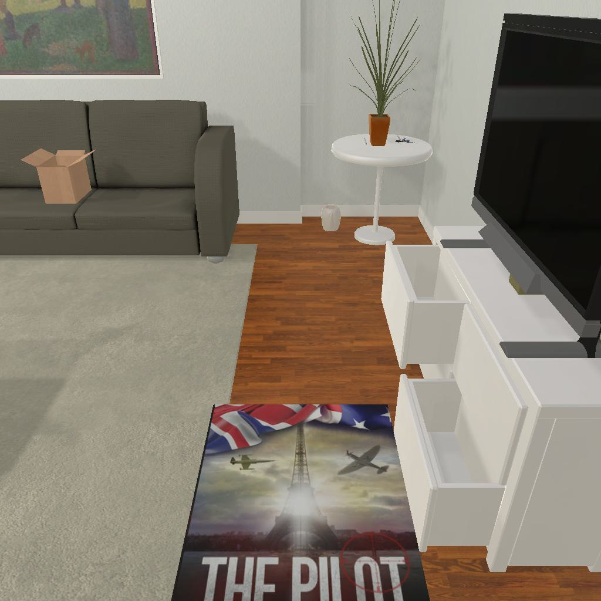

---------------------------------------------------------task: 5---------------------------------------------------------
--------------------------------------------------------------------------------------------------------------------------------------------------------------------
--------------------------------------------------------------------------------------------------------------------------------------------------------------------
Step:--------------------------------------------------------------------------9-------------------------------------------------------------------------------
----------------------------------------
VLM Prompt:
Image1:
**Instruction**
1. Analyze the provided image to identify all visible household objects, focusing on those relevant to the task description "put a book in armchair."
2. Use the analysis of the image and the task hint "The agent must find an object of the desired type, pick it up, find the correct location to place it, and put it down there." to answer the question: what is the most reasonable action in the choices for the task description "put a book in armchair"?
4. Decide and write the answer using the template: The answer is: (i): , where i is the real number. If there is no desired object in the image, search every place based on **Initial Observation** to find the object. And if no one is exactly correct, choose a similar answer.
**Initial Observation**
You are in the middle of a room. Looking quickly around you, you can see armchair (1), sofa (1), coffeetable (1), drawer (1-4), sidetable (1-3), dresser (1)
**Answer Choices**
(1): go to armchair 1
(2): go to sofa 1
(3): go to coffeetable 1
(4): go to drawer 1
(5): go to sidetable 1
(6): go to dresser 1
(7): go to drawer 2
(8): go to sidetable 2
(9): go to sidetable 3
(10): close drawer 4
(11): put book 1 in/on drawer 4
(12): examine book 1
(13): examine drawer 4
**Answer**
Let's think step by step by following the instructions.
----------------------------------------
----------------------------------------
Original Response:
First, we need to identify all visible household objects relevant to the task. In the image, there is no armchair visible, but we can see a sofa, a coffee table, a side table, and a TV stand with drawers. There is no book visible in the image.
Considering the task description "put a book in armchair" and the initial observation stating the existence of an armchair, we need to find a book before we can place it in the armchair. Since there is no book in the image, we must search every place based on the initial observation to find one.
Among the answer choices, the most reasonable action for the task description would be to go to a location where a book might be found. Drawers, sidetables, and dressers are typical places where one might find a book.
Since we cannot see an armchair or a book in the image, we can eliminate choices (1), (2), (3), (10), (11), and (12). Among the remaining choices, going to a drawer or a dresser would be the most reasonable next step to potentially find a book.
The answer is: (4): go to drawer 1.
----------------------------------------
----------------------------------------
>>> Refine Original VLM Response and Get Pure Action: go to drawer 1
----------------------------------------
-----------------------------------------------------------------
Running time: 14.118181228637695 seconds
Total Money: 1.5223
-----------------------------------------------------------------
-----------------------------------------------------------------
Text Observation:You arrive at loc 3. The drawer 1 is open. On the drawer 1, you see a houseplant 1, a television 1, a box 1, a wateringcan 1, a keychain 1, a pencil 1, and a pencil 2.
-----------------------------------------------------------------
UNSUCCEED